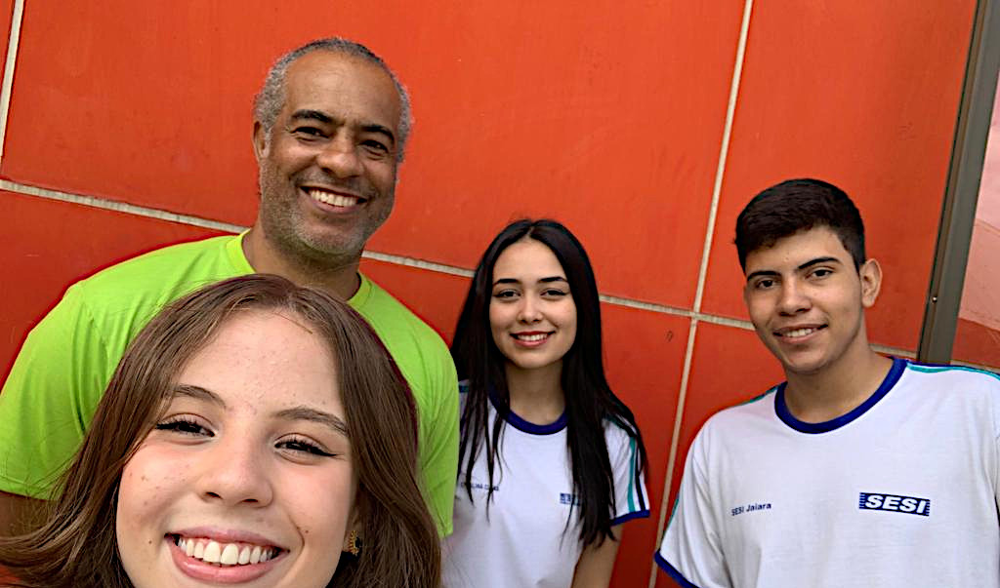

Curiosidades de Tecnologia
Tudo aquilo que você sempre quis saber sobre o mundo Tech, em um único lugar
Home
Jogo
Curiosidades
Projeto de Inovação
Entrevistas
Entrevista sobre história do SESI
Entrevista com Gean
